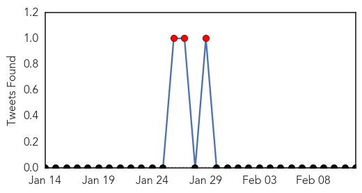

30 Day Trends
Web: 23 alerts, 1 warnings
Twitter: 3 alerts, 0 warnings
Top Articles:
- 0.991
- Measles continues to spread across the U.S.
- 0.983
- More evidence shows link
- 0.982
- Cayman issues alert over US measles outbreak
- 0.981
- Measles outbreak has not yet reached Guelph, Wellington County
- 0.977
- K-State, Manhattan prepared for threat of measles return
- 0.974
- Measles: The pathology of a comeback
- 0.970
- no measles in Spring Creek
- 0.968
- Commuter with measles prompts BART warning
- 0.967
- Measles outbreak hits third Canadian province
- 0.957
- Disney-linked measles invade Canada
- 0.951
- Public Health Agency of Canada
- 0.951
- Train Rider Exposes Thousands to Measles in San Francisco Area
- 0.950
- Measles outbreak highlights the importance of adult immunization
- 0.949
- Public Health Notice: Measles
- 0.946
- 2 of 3 suspected measles cases in North Dakota test negative
- 0.945
- Another Suburban Measles Case Brings Illinois Total To 11 « CBS Chicago
- 0.943
- Measles outbreak: infected LinkedIn commuter puts Silicon Valley on alert
- 0.939
- Commuter with measles prompts California transit warning
- 0.939
- Measles spreads to 25 localities in Vietnam
- 0.938
- Commuter with measles prompts California transit warning
- 0.938
- San Francisco BART commuters exposed to measles
- 0.933
- First case of measles reported in Contra Costa; BART riders may have been exposed
- 0.928
- Hundreds of SF Train Riders Potentially Exposed
- 0.927
- Article: Measles vs. MMR Vaccine: Risks and Benefits
- 0.924
- Commuter with measles prompts California transit warning
- 0.923
- Measles outbreak reopens vaccine debate
- 0.916
- Halton Region issues measles advisory to local physicians, hospitals
- 0.915
- Don’t poke me, bro!
- 0.915
- How to keep your family safe from measles
- 0.913
- Vaccines for children should be mandatory
- 0.912
- When the choice isn’t yours: Families of pediatric cancer patients live in fear amidst measles outbreak
- 0.909
- Measles booster shots may be needed for some adults and kids, Michigan health officials advise
- 0.908
- Why are people getting measles?
- 0.906
- Commuter with measles prompts Bay Area transit warning
- 0.888
- Making the case for vaccination
- 0.873
- McHenry County pediatricians watching measles outbreak with concern
- 0.872
- ECC offers measles vaccine today
- 0.871
- McHenry County pediatricians watching measles outbreak with concern
- 0.866
- Yevgeniy Feyman: Philosophical vaccine exemptions are poison
- 0.864
- Why is measles back?
- 0.861
- Caribbean must 'step up' surveillance to prevent measles outbreak - UN
- 0.856
- Measles not likely to reach Biola « The Chimes
- 0.848
- Top 10 reasons parents don’t vaccinate — debunked
- 0.845
- Portage County investigates 2 suspected measles cases
- 0.843
- Thousands of San Francisco commuters possibly exposed to measles on train
- 0.829
- Measles outbreak: Pa. senator proposes taking away vaccination exemption
- 0.811
- Channel 6 Lawrence, KS
- 0.805
- AP Exclusive: Disney gave input on measles health messages
- 0.804
- Getting vaccinated is the right thing to do
- 0.799
- Atlanta > 35 Identified Related to Georgia Measles Case
Showing top 50 articles...
Top Tweets:
-
No tweets found for Feb 12, 2015
Web/News Articles
Tweets
Article Locations

Article Confidences